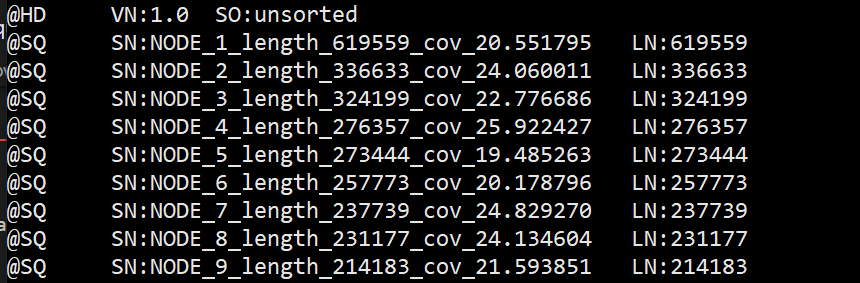
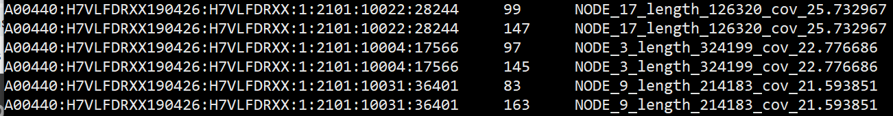
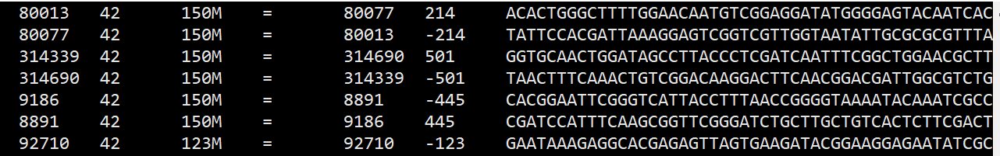
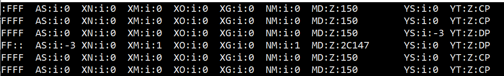

Bowtie2(alignment)
Bowtie 2 is an ultrafast and memory-efficient tool for aligning sequencing reads to long reference sequences. It is particularly good at aligning reads of about 50 up to 100s of characters to relatively long (e.g. mammalian) genomes.
Bowtie 2：将测序reads与长的参考序列进行比对的工具
Bowtie 2 outputs alignments in SAM format, enabling interoperation with a large number of other tools (e.g. SAMtools, GATK) that use SAM.
当测序得到的fastq文件map到基因组之后，用sam（Sequence Alignment/Map）统一格式来表示这种mapping结果，bam是sam的二进制文件(b binary)。sam文件由注释信息和比对结果两部分组成。
其中第4列有POS信息，就是map到reference的位置信息。
原理
Bowtie2的速度很快，背景是这样的，主要是多线程处理器的普及。
While specialized (e.g. graphics) processors have been highly multithreaded for some time, this only recently became true for the general-purpose processors that can boot standard operating systems and that typically power servers and desktops.
但是，单纯直接向软件工具中添加多线程并不能保证它会很好地使用线程。 a tool’s overall throughput to decrease when thread count grows large enough这个现象是常见的。
未来的工作应考虑扩展到更多线程数，更好地利用多线程。
Bowtie2解决了将读取对齐器扩展到通用处理器上数百个线程的问题，也就是很好地利用了多线程，所以速度那——么快。
We propose strategies that scale to hundreds of threads better than alternative approaches like multiprocessing or the pipelined approach taken by BWA-MEM (Li, 2013). We explore how the FASTQ file format (Cock et al., 2010), its unpredictable record boundaries in particular, can impede thread scaling. We suggest a way to change FASTQ files and similar formats that enable further improvements in thread scaling while maintaining essentially the same compressed file size.
应用
1 | bowtie2 [options]* -x <bt2-idx> {-1 <m1> -2 <m2> | -U <r> | --interleaved <i> | --sra-acc <acc> | b <bam>} -S [<sam>] |
我们输入的文件是双端测序的reads文件，-1 <m1> -2 <m2>，把之前assembly的fasta文件作为reference，输出sam文件是alignment的结果。
-x <bt2-idx>
The basename of the index for the reference genome
由bowtie2-build所生成的索引文件。
-1 <m1> -2 <m2>
Comma-separated list of files containing mate 1s (filename usually includes _1), e.g. -1 flyA_1.fq,flyB_1.fq. Sequences specified with this option must correspond file-for-file and read-for-read with those specified in <m2>.
双端测序，-1 <m1> -2 <m2> 文件一一对应，用逗号分隔开。
- 对参考序列构建index
1 | bowtie2-build H11_01.fasta index |
- 使用前100个reads进行比对，8个线程
1 | bowtie2 -u 100 -p 8 -x index -1 H11_01_1.fastq -2 H11_01_2.fastq -S out.sam |
- 据说常用的参数设置如下，以获得更好的结果
1 | bowtie2 -q --phred33 --sensitive --end-to-end -I 0 -X 500 --fr --un unpaired --al aligned --un-conc unconc --al-conc alconc -p 6 --reorder -x <bt2-idx> {-1 <m1> -2 <m2> | -U <r>} -S [<hit>] |
下面来考察一下之前比对完成的结果文件out.sam
sam文件信息
1 | less -S out.sam |
开头是序列的注释信息
@HD，说明符合标准的版本、对比序列的排列顺序
@SQ，参考序列说明
@SQ 有SN和LN。
SN: Reference sequence name. The SN tags and all individual AN names in all @SQ lines must be distinct. The value of this field is used in the alignment records in RNAME and RNEXT fields.
LN: Reference sequence length. Range: [1, 231 − 1].

grep -v ‘^@’ 去掉注释信息，看一看结果
1 | grep -v '^@' out.sam|less -S |
第一列是比对序列的名称，就是原fastq文件每一条read的第一行的信息。
第二列是 bitwise FLAG，表示了一些组合信息，比如说下图第一行第二列是99，那么直接用https://broadinstitute.github.io/picard/explain-flags.html这个网站算一下，结果如下，0x是16进制，$99=1+2+2\times 16+4\times 16$
read paired (0x1)
read mapped in proper pair (0x2)
mate reverse strand (0x20)
first in pair (0x40)
第三列参考序列的名称，对应于fasta文件每一条第一行

第四列是比对到的位置，我觉得应该是对应于前面参考序列名称的这条序列的位置，1-based leftmost position
第五列是比对质量mapping quality，我们的结果里似乎都是42的样子……（没往下翻看）比对质量越大越好。
第六列是cigar string，这里看到的是M代表alignment match
第七列是Rnext，reference name of the mate，（这里是=，我猜是两者map到的reference序列是同一条的意思）
第八列是Pnext，position of the mate，我们可以观察到两个互不序列他们的第四列、第八列分别换一换。
第九列是序列长度，观察到正负交替，反向序列的负的，但是同样长度。
第十列是序列

第十一列是质量
第十二列是tags

一些数据信息
- 统计共多少条reads(pair-end reads这里算一条)参与了比对参考基因组，100条，与我们之前相对应
1 | grep -v '^@' out.sam|cut -f 1 |uniq |wc -l |
- sam文件里面的头文件行数，有180行
1 | grep -c '^@' out.sam |
- 发现有1条序列比对失败
1 | grep -v '^@' out.sam|awk '{if($6=="*")print$10}'|wc -l |
- 发现这是单端失败，并拿到它的id
1 | grep -v '^@' out.sam|awk '{if($6 =="*") print$1}'|sort -n |uniq -c |grep -w 2 |